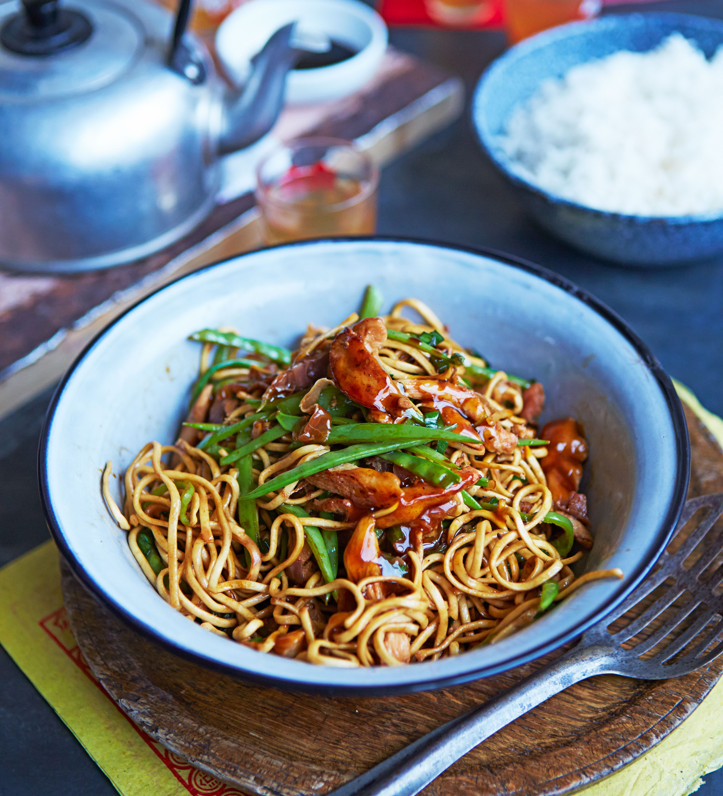

Home
Chicken Stir Fry

Recipe
Chicken stir fry is a quick and flavorful dish made with tender chicken and crisp vegetables cooked over high heat. The combination of savory sauce and fresh vegetables makes it both light and satisfying.
It’s a versatile recipe that’s great for busy days, offering a balanced meal with protein and vegetables in every bite. Simple, fast, and full of flavor.
Ingredients
- Chicken breast (sliced)
- Olive oil
- Onion
- Garlic
- Bell peppers
- Broccoli
- Soy sauce
- Black pepper
- Paprika or chili flakes
Steps
- Heat oil in a large pan or wok over medium-high heat.
- Add garlic and onion and cook briefly until fragrant.
- Add chicken slices and cook until lightly browned.
- Season with pepper and paprika or chili flakes if using.
- Add vegetables and stir fry for a few minutes until tender-crisp.
- Pour in soy sauce and toss everything together.
- Cook for another 2–3 minutes and serve hot.